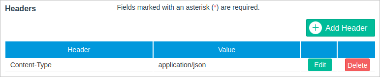
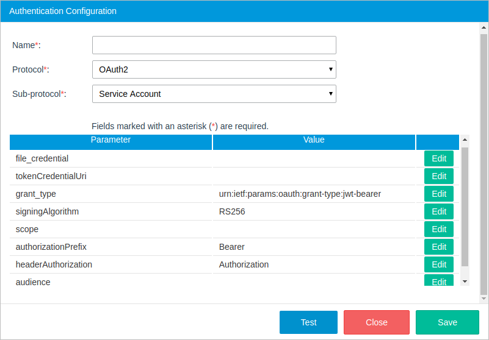

Connectors Wizard
After the plug-in is enabled, a new tab named PM Connectors will be added next to the Logs tab under the Admin section.

Disclaimer: ProcessMaker Connectors plugin provides a way to authenticate and use Rest APIs (Connectors) from external services. However, it does not guarantee nor is liable for the functionality of the 3rd party application services nor the documentation of using those services that can change in the future. For more information, please access the Rest API documentation of G Suite or any other 3rd party services.
The PM Connectors tab is divided in three parts:
Authentication Configuration
The Authentication Configuration section is used to store and manage the information about the user's credentials required to access the external service through a connector. An authentication configuration can be used by more than one connector, but a connector can use just one authentication configuration.
Warning: Please be aware that the authentication configuration data may hold sensitive information about the user's account credentials.
The Enterprise Connectors plugin supports three different types of authentication protocols, each one with its respective sub-protocols:
- HTTP
-
API Key Authentication
Available Version: As of Enterprise Connectors plugin version 1.3.0
- Basic Authentication
-
- No Authentication
- No Authentication
- OAuth2
- Authorization Code
- Client Credentials
- Password
- Service Account
To create a new authentication configuration, click the Create button at the top-right of the section.

The Authentication Configuration dialog is displayed to set the following parameters:

- Name: Name of the configuration.
- Protocol: The protocol of the configuration, which can be:
- Sub-protocol: The sub-protocol. Depending on the protocol selected, the sub-procotol can be:
- API Key Authentication Available Version: As of Enterprise Connectors plugin 1.3.0
- Basic Authentication
- No Authentication
- Authorization Code
- Client Credentials
- Password
- Service Account
Please read each sub-protocol section to know how to fill out the required information.
- url: The HTTP authorization header.
- headerAuthorization: The type of authorization, which is set to Authorization by default, but can be edited depending on the web service.
- authorizationPrefix: The token type that will be used in the authorization header, which is set to Bearer by default but can be edited depending on the web service. apiKey: A unique API key.
- apiKey: A System Administrator or IT Manager can easily create an HTTP authentication by providing custom API keys.
- The credential validation
- The token validation
- URL: The HTTP authorization header.
- username: The username of the user account.
- password: The password of the user account.
- grant_type: The token grant type. By default, the "authorization_code" option is selected.
- authorizationUri: The Authorization URL of the API Service Provider where ProcessMaker will make the request to obtain an authorization code.
- tokenCredentialUri: The path of the application that provided the token.
- refreshTokenUri: An encrypted payload that can be used to refresh the access token when it expires.
- redirectUri: The client redirect URI. This parameter is optional, but if not send the user will be redirected to a pre-registered redirect URI.
- clientId: The client ID that was given when registering the application.
- clientSecret: The client secret code. This code is used to authenticate the identity of the application to the API service when the application requests access to the user's account. The Client Secret code is given when registering the application.
- scope: The level of access you have within the API. Some service provider may require this parameter.
- response_type: The value of the autorization response code.
- masterCredentials: Levels of accesing the service from the plugin.
- True: If set to true, the tokens generated by this service is shared by all the users in ProcessMaker.
- False: If set to false, the tokens will not be shared and each user should generate their own tokens.
- authorizationPrefix: The token type that will be used in the authorization header, which is set to "Bearer" by default in sub-protocols that use OAuth2, but can be edited depending on the web service.
- headerAuthorization: The type of authorization, which is set to "Authorization" by default, but can be edited depending on the web service.
- audience: The audience for the generated token to know which API issue can access the token. The audience should be in a JWT format.
- tokenCredentialUri: The path of the application that provided the token.
- grant_type: The token grant type. By default, the "client_credentials" option is selected.
- scope: The access level the application can request access to. The options include: * (all scopes), "edit_process" (access to endpoints to change processes), "view_process" (access to endpoints to view but not change processes).
- clientId: The client ID that was given when registering the application.
- clientSecret: The client secret code. This code is used to authenticate the identity of the application to the API service when the application requests access to the user's account. The client secret code is given when registering the application.
- authorizationPrefix: The token type that will be used in the authorization header, which is set to "Bearer" by default in sub-protocols that use OAuth2, but can be edited depending on the web service.
- headerAuthorization: The type of authorization, which is set to "Authorization" by default, but can be edited depending on the web service.
- audience: The audience for the generated token to know which API issue can access the token. The audience should be in a JWT format.
- tokenCredentialUri: The path of the application that provided the token.
- grant_type: Token grant type. By default, the password option is selected.
- scope: The access level the application can request access to. This value depends on the service the user is requesting.
- clientId: The client ID that was given when registering the application.
- clientSecret: The client secret code. This code is used to authenticate the identity of the application to the API service when the application requests access to the user's account. The Client Secret code is given when registering the application.
- username: The username of the user account.
- password: The password of the user account.
- authorizationPrefix: The token type that will be used in the authorization header, which is set to "Bearer" by default in sub-protocols that use OAuth2, but can be edited depending on the web service.
- headerAuthorization: The type of authorization, which is set to "Authorization" by default, but can be edited depending on the web service.
- audience: The audience for the generated token to know which API issue can access the token. The audience should be in a JWT format.
- file_credential: The key file generated by the service account provider.
- tokenCredentialUri: The path of the application that provided the token.
- grant_type: The token grant type. The service account sub-protocol uses the value
urn:ietf:params:oauth:grant-type:jwt-bearerby default. - signingAlgorithm: RS256. Service accounts rely on the RSA SHA-256 algorithm.
- scope: The list of scopes that the connector is granted access to. For example, if the connectors need domain-wide access to the Google Drive API and the Google Calendar API, enter: https://www.googleapis.com/auth/drive, https://www.googleapis.com/auth/calendar.
Note: If you are using Google Connectors, it is recommended to limit the number of scopes to those only that are required to connect your connector. If you use unnecesary scopes, it can causes problems while executing connectors.
- authorizationPrefix: The token type that will be used in the authorization header, which is set to "Bearer" by default in sub-protocols that use OAuth2, but can be edited depending on the web service.
- headerAuthorization: The type of authorization, which is set to "Authorization" by default, but can be edited depending on the web service.
- audience: The audience for the generated token to know which API issue can access the token. The audience should be in a JWT format.
- Name: Name of the service.
- Product Name: (Optional) Name of the product, i.e. Sugar CRM.
- Product Version: (Optional) Version of the product, i.e. 7.
- API Version: (Optional) Version of the API. Versioning helps the user iterate faster and prevents invalid requests from hitting updated endpoints. i.e. 10.
- Upload File: (Optional) The Service image. Upload an image to easily identify the service.
- Authentication Configuration: The configuration to which this service will belong.
- Search: Search for a word in the services, name, description and type columns.
- Select: Filter the connectors by services.
- Edit: Edit the connector configuration.
- Delete: Remove the connector from the ProcessMaker instance.
- Copy: Users can copy an existing connector and create a new one from the original.
- Name: Name of the connector.
- Description: A brief description of the connector.
- Date Created: The timestamp when the connector was saved. This field is automatically filled in.
- Services: Select the service to which the connector will belong. The service image and information will be displayed in the Logo field.
- Method: Request method which can be: GET, POST, PUT, DELETE, PATCH.

- URL: The URL that points to the resource. This URL can include path parameters that are introduced in the Test Connector section or through the Service Task interface. To manually add a parameter to the path, include the parameter name between {} marks in the URL. For example:
https://www.googleapis.com/calendar/v3/calendars/{calendarId}/events - Authentication Configuration: Select an authentication configuration.
Headers: (Optional) Request headers, such as Authorization, Accept, Content-Type, etc. This section allows arbitrary HTTP headers to be added that the user might want to include with their request. Note that a header can contain all sorts of meta information that can be overridden or merged with another header during execution. For example, the user can include the Content-Type header with the text encoding used in the message body, as shown in the image below.

Query Parameters: (Optional) Query parameters and their description. A query parameter is a method parameter not included in the URL path property to narrow the request response. They are separated from the URL path by the question mark (?).

- Body Type: The request body type. Depending on the type of request, the body type can be set to "Json" or "Form".
- Json: Select this option if the data in the request body needs to be sent as a serialized JSON. Most of endpoints work with this type.
If this option is selected, the following field will be displayed:
- Body Description: (Optional) A description of all the parameters required in the body, so the user knows how to send the request body.
- Form: Select this option if the data in the request body needs to be sent encoded as form-data. This option is useful for sending files as part of the request. If this option is selected, the following section will be displayed:
Form Parameters: A set of name and value pairs sent in the request. The parameter Type can be "text" or "file".

- Json: Select this option if the data in the request body needs to be sent as a serialized JSON. Most of endpoints work with this type.
- Author: The user who created the connector.
- Name: The name of the connector.
- URL: The URL path.
- Overwrite Config Parameters: Overwrite any of the header's configuration parameters.
- Form Parameters: Fill out the form parameters set in the connector configuration.
- Path Parameters: Fill out the path parameters configured in the connector configuration. These are the method parameters included between
{...}marks in the URL property. An example of a path parameter is marked in red in the image above. - Query Parameters Fill out the query parameters configured in the connector.
- Request Body: Introduce a request body in JSON format. This field is available only if the connector body type was set to "Json".
After the sub-protocol configuration is set, click on Test to confirm that the information is correct. If the credentials given were correct, a green message will be displayed at the top of the window dialog as shown in the image below. Save the configuration by clicking the Save button.

If a problem occurs, a red dialog message will be displayed containing the error information.

Protocol: HTTP
Sub-Protocol: API Key Authentication
Available Version: As of Enterprise Connectors plugin 1.3.0
The API Key Authentication uses custom API keys. An API key is a token that the service provider provides you when making API calls.
The API Key Authentication has the following required parameters:

Note: The API Key Authentication is for custom REST API services that before to generate the API key complies with:
Then, the REST API service can be consumed.
Sub-Protocol: Basic Authentication
Basic authentication is a simple way to be authenticated using a special HTTP authorization header constructed with the user's username and password encoded in base64. The basic authentication sub-protocol works with services like: Alfresco, Zimbra, twilio, etc.

Protocol: No Authentication
Sub-Protocol: No Authentication
The no authentication sub-protocol is used when credentials are not required to access the service or when the user needs to set a custom header with their own access token and bearer.

Protocol: OAuth2
Sub-Protocol: Authorization Code
The sub-protocol should be very familiar if the user has ever signed into a web app using their Facebook, Google, Adobe Sign, among other accounts.

Sub-Protocol: Client Credentials
This sub-protocol is used to request authorization to resources owned by the client rather than any specific end-user, using only the client ID and client secret. Since the client authentication is used as the authorization grant, no additional authorization request is needed. The client credentials sub-protocol works with services like ProcessMaker, Bitbucket, Adobe Cold Fusion, and others.

Sub-Protocol: Password
In this type of sub-protocol, the user provides their resource server credentials (username and password) to the Enterprise Connectors plugin, which uses the credentials to obtain an access token from the service. An identity server validates the credentials and if the information is valid, the service proceeds to generate an access token and returns it to the plugin. The password sub-protocol works with services like SugarCRM, Oracle, Zendesk and others.

Sub-Protocol: Service Account
A service account is an account that belongs to the application instead of to an individual end user. With this sub-protocol, ProcessMaker will connect to the APIs on behalf of the service account, so users aren't directly involved.

Services
The services section helps the user keep connectors organized by Service. Each service belongs to a single authentication configuration.

To create a new service, click on the Create button in the top corner of the window.

After all the properties are set, click on Save.
Connectors
The connectors section displays a list of all the connectors available in the current ProcessMaker instance. This section contains a connector wizard to create almost any kind of request quickly, along with a download button to access the Connectors Library.

Connector Wizard
The connector wizard gives the user tools to set all the necessary parts (URL, method, headers, and body) of a service request. To start creating a connector, click on the Create button at the top-right corner of the Connectors panel and define the following parameters:

After the configuration is set, click on Test to display the Test Connector window.
Testing a Connector
The Test button at the end of the Connectors window lets the user test a connector configuration before saving it. By clicking it, the Test Connector window will be displayed:

In the first part of this window, information about the connector is displayed:
Depending on the connector's configuration, the following sections may be filled out with values to be tested.
After all the test values are set, click the Test button at the end of the window. A new window named Response will be displayed with the response to the connector's request.

If the response is satisfactory, close this window and save the configuration. If there is a problem, the error will be shown in the Response window as well.